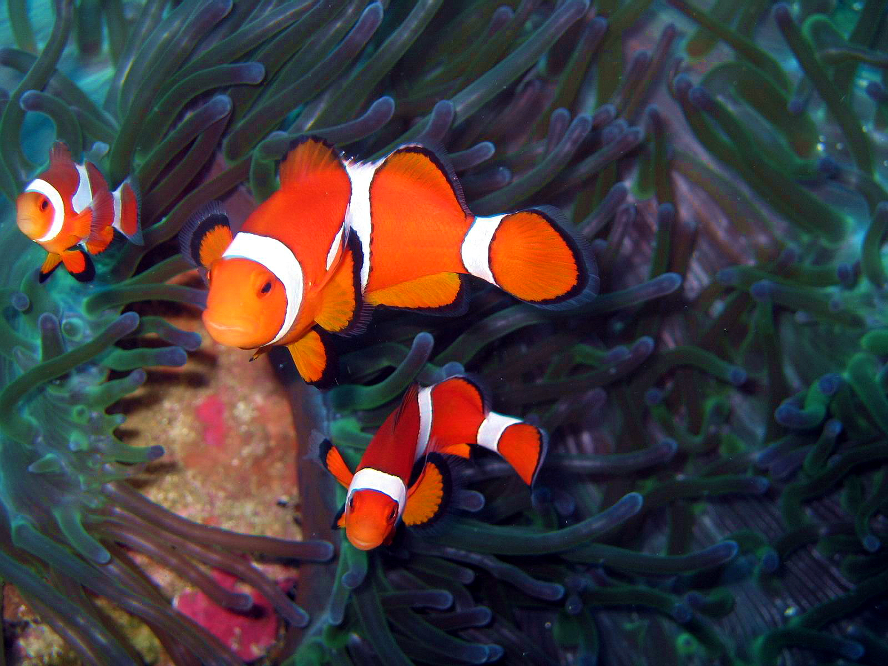

These Terms & Conditions (“Terms”) govern the use of booking services provided by Philippine Tourism Guide Booking Services (“we,” “our,” or “us”) through our websites, including but not limited to BoholDivingAdventures.com (collectively referred to as “the Websites”). By using any of our Websites or making a booking, you agree to be bound by these Terms.
2. Role as a Booking Agent
Philippine Tourism Guide Booking Services acts solely as a booking agent for third-party service providers, including but not limited to dive shops, accommodation providers, transport operators, and other travel-related services (“Service Providers”). We facilitate bookings between travelers and Service Providers; however, we do not own, operate, or control these services.
3. Limitation of Liability
a) Philippine Tourism Guide Booking Services is not responsible for any accidents, injuries, deaths, property damage, delays, cancellations, or other issues that may arise during your travel or while using any booked services.
b) We do not provide warranties or guarantees regarding the safety, quality, reliability, or suitability of services provided by third-party operators.
c) Any disputes, claims, or liabilities related to the services provided must be resolved directly between the traveler and the Service Provider.
4. Travel Insurance Recommendation
We strongly recommend that all travelers obtain comprehensive travel insurance that covers diving, medical emergencies, trip cancellations, lost baggage, and any other unforeseen events. It is your responsibility to ensure that your insurance policy is adequate for your planned activities.
5. Medical & Fitness Requirements
It is your responsibility to ensure that you are medically and physically fit to participate in any activities booked through our Websites, including but not limited to scuba diving, snorkeling, and adventure travel. Certain activities may have specific health and certification requirements, such as dive medical clearance or proof of diving experience. If you have any medical conditions, are pregnant, or are taking medication that may affect your ability to participate safely, you should consult a doctor before booking.
6. Payments & Cancellations
a) Bookings may be subject to the payment and cancellation policies of individual Service Providers. Please review these policies carefully before making a reservation.
b) Philippine Tourism Guide Booking Services is not responsible for refunds, cancellations, or changes imposed by Service Providers. Any such requests must be handled directly with the respective Service Provider.
7. Assumption of Risk
By booking through Philippine Tourism Guide Booking Services, you acknowledge that diving, travel, and other adventure activities involve inherent risks. You agree to participate at your own risk and assume full responsibility for any consequences that may arise.
8. Accuracy of Information
We strive to provide accurate and up-to-date information about the services listed on our Websites. However, we do not guarantee the accuracy, completeness, or reliability of any descriptions, pricing, schedules, or availability, as these are subject to change by the Service Providers.
9. Indemnification
You agree to indemnify and hold Philippine Tourism Guide Booking Services, its owners, employees, and affiliates harmless from any claims, damages, losses, liabilities, or expenses arising from your use of our booking services or your participation in activities booked through our Websites.
10. Privacy Policy
10.1 Information We Collect
When you make a booking or use our Websites, we may collect personal information, including but not limited to:
Your name, email address, phone number, and payment details.
Information related to your travel preferences and bookings.
Any other details necessary to process your reservations.
10.2 How We Use Your Information
We use your personal data to:
Process and manage your bookings.
Communicate with you regarding your reservations or inquiries.
Improve our services and provide customer support.
We do not sell, rent, or share your personal information with third parties, except as necessary to complete your bookings with Service Providers.
10.3 Data Security
We take reasonable measures to protect your personal data from unauthorized access, misuse, or disclosure. However, we cannot guarantee absolute security over the internet.
10.4 Cookies & Tracking
Our Websites may use cookies and similar tracking technologies to enhance user experience and analyze site traffic. You can manage your cookie preferences in your browser settings.
10.5 Third-Party Links
Our Websites may contain links to third-party websites. We are not responsible for the privacy practices or content of these external sites.
10.6 Your Rights
You may request access to or deletion of your personal data by contacting us at [your contact email]. We will process such requests in accordance with applicable data protection laws.
11. Changes to Terms & Conditions
We reserve the right to modify these Terms & Conditions at any time without prior notice. Continued use of our Websites and services constitutes acceptance of any updated terms.
12. Governing Law
These Terms & Conditions shall be governed by and interpreted in accordance with the laws of the applicable jurisdiction. Any disputes shall be resolved in the relevant courts of that jurisdiction.
By using Philippine Tourism Guide Booking Services and our Websites, you confirm that you have read, understood, and agreed to these Terms & Conditions.
Inquire today, and let us craft your personalized adventures!
Environmental Fee: Local Sites Php 100/pax/day Balicasag Php 250/pax/day
DISCOVER SCUBA DIVING
✅ Full equipment included
❌ Certification fee not included
A fantastic way for beginners to experience scuba diving for the first time
PHP 3,500
Environmental Fee: Local Sites Php 100/pax/day Balicasag Php 250/pax/day
Rescue Diving Course
✅ Full equipment included
❌ Book & Certification fee not included
PHP 19,500
Environmental Fee: Local Sites Php 100/pax/day Balicasag Php 250/pax/day
Top 5 Bohol Dive Sites for Beginners and Advanced Divers
1. Balicasag Island
Balicasag Island is one of Bohol’s most famous dive spots, perfect for both beginners and advanced divers. The island features breathtaking coral gardens, steep walls, and enormous schools of jackfish. Turtles are commonly spotted here, making it a must-visit site.
2. Cabilao Island
Cabilao Island is known for its rich biodiversity, offering stunning coral reefs, schooling barracudas, and excellent macro life. Beginners can explore shallow reefs, while advanced divers can venture into deeper walls teeming with marine creatures.
3. Pamilacan Island
Pamilacan Island is a hidden gem that provides thrilling encounters with reef sharks, sea snakes, and sometimes manta rays. The gentle currents make it an excellent spot for novice divers, while deeper sections challenge more experienced ones.
4. Anda
Anda is quickly gaining recognition for its untouched dive sites, offering vibrant marine ecosystems, caves, and coral-covered walls. It’s great for macro photography, and advanced divers can explore deeper waters for fascinating marine species.
5. Arco Point
Arco Point is a fantastic site for cave diving, with unique rock formations and impressive swim-throughs. It’s ideal for adventurous divers seeking a different kind of underwater experience in Bohol.
Whether you're a beginner looking for easy dives or an experienced diver searching for deeper challenges, Bohol offers a wide range of spectacular underwater adventures.
HOW TO GET TO BOHOL ISLAND?
By Air:
✅ Direct flights are available from Manila, Cebu, and other major cities to Bohol-Panglao International Airport.
✅ From the airport, you can take a taxi or shuttle to your accommodation.
By Ferry:
✅ From Cebu City, take a ferry from Pier 1 to Tagbilaran Port.
OceanJet and Lite Ferries operate multiple daily trips, with travel times of around 2 hours.
✅ From Dumaguete City, OceanJet offers ferry services to Tagbilaran, taking approximately 2 hours.
✅ From Cagayan de Oro, there are overnight ferries to Tagbilaran.
By Private Transport:
✅ You can book a private transfer from Mactan-Cebu International Airport to the ferry terminal in Cebu City.
✅ After arriving in Tagbilaran, private vans and taxis are available to take you to your destination.
By Public Transport:
✅ Take a taxi or Grab from Mactan-Cebu International Airport to the **Cebu North Bus Terminal.
✅ Board a bus bound for Tubigon Port (a faster ferry route to Bohol). The bus ride takes around 2–3 hours.
✅ From Tubigon, take a ferry to **Tagbilaran or Panglao.
About Us
"Experience the best of Bohol with us!"
We ensure you have a smooth and enjoyable holiday by helping you avoid scams and overpriced operators.
We will lead you to Bohol's most enchanting corners.
Experience the best adventures and activities every tourist spot offers.
You focus on creating memories while we handle the logistics and everything else.
Our Story
Mary, the owner and founder of Bohol Diving Adventures, embarked on a journey to explore and witness the mesmerizing beauty Bohol Island offers. Inspired by these breathtaking experiences, she realized the importance of sharing this beauty with the world as a local who knows Bohol inside and out. Recognizing that travel can sometimes come with challenges, she created this website to provide valuable information, tips, and awareness. In addition, the website offers booking services to ensure your travel experience is not only memorable and relaxing but also worry-free.
Who We Are
Bohol Diving Adventures under PhilippineTourism Guides acts solely as a booking agent for third-party service providers, including dive shops, accommodation providers, transport operators, and other travel-related services (“Service Providers”). We facilitate bookings between travelers and Service Providers; however, we do not own, operate, or control these services.
Mission
To transform your diving experience into unforgettable, amazing adventures while promoting other activities that Bohol Island has to offer.
Vision
To be the premier online resource for travelers seeking authentic and unforgettable experiences in Bohol Island, by providing comprehensive, reliable, and inspiring travel information that showcases the beauty, culture, and adventure the Island has to offer.
Discover Bohol Island: A Tropical Paradise in the Philippines
Bohol Island, a gem in the heart of the Philippines, offers a unique blend of natural beauty, rich history, and vibrant culture. This tropical paradise is a must-visit destination for travelers seeking adventure, relaxation, and unforgettable experiences.
Bohol is renowned for its stunning natural landscapes. The island's most famous landmark, the Chocolate Hills, consists of over 1,200 conical hills that turn brown during the dry season, resembling chocolate mounds. This geological wonder is a sight to behold and offers panoramic views from the observation deck.
Another natural marvel is the Hinagdanan Cave, a hidden gem with an underground lake. Visitors can explore its limestone formations and take a refreshing dip in its clear waters. For those seeking adventure, Bohol's waterfalls, such as Mag-Aso Falls and Dimiao Twin Falls, provide a picturesque backdrop for hiking and swimming.
Bohol is a diver's paradise, boasting some of the best dive sites in the Philippines. The waters surrounding Panglao Island, a popular diving destination, are home to vibrant coral reefs and diverse marine life. Balicasag Island, in particular, offers an underwater haven where divers can encounter colorful fish, sea turtles, and even whale sharks.
For a unique diving experience, explore the underwater caves and coral gardens of Anda. Whether you're a novice or an experienced diver, Bohol's crystal-clear waters and rich marine biodiversity promise unforgettable underwater adventures.
Bohol's cultural heritage is deeply rooted in its history and traditions. Visit the historic Baclayon Church, one of the oldest stone churches in the Philippines, and admire its intricate design and religious artifacts. The Blood Compact Shrine commemorates the first international treaty of friendship between Filipinos and Spaniards, a significant event in the island's history.
Experience Bohol's vibrant festivals, such as the Sandugo Festival, which celebrates the blood compact treaty with colorful street parades, music, and dance performances. These cultural events showcase the island's lively spirit and traditions.
Bohol's culinary scene offers a delightful taste of Filipino cuisine. Savor the flavors of local dishes such as "binakol," a chicken soup with coconut, and "kalamay," a sweet sticky rice dessert. Don't miss the opportunity to indulge in fresh seafood, including grilled fish, prawns, and crabs, at seaside restaurants.
When planning your trip to Bohol, consider visiting during the dry season from November to April for the best weather conditions. The island offers a range of accommodations, from luxury resorts to budget-friendly guesthouses. Panglao Island is a popular choice for its beachfront hotels and lively nightlife.
To get around Bohol, you can rent a scooter or hire a local driver. Exploring the island by scooter allows you to discover hidden gems and picturesque landscapes at your own pace.
Bohol Island is a tropical paradise that offers something for every traveler. From its breathtaking natural attractions and world-class diving spots to its rich cultural heritage and delicious local cuisine, Bohol promises an unforgettable adventure. Plan your trip today and experience the beauty and charm of this enchanting island.
Fun Diving
Single Dive
✅ Full equipment included
✅ Less Php 300 (own equipment)
PHP 1,800
Environmental Fee: Local Sites Php 100/pax/day Balicasag Php 250/pax/day
12 Dives Package
✅ Full equipment included
✅ Less Php 3,000 (own equipment)
PHP 19,500
Environmental Fee: Local Sites Php 100/pax/day Balicasag Php 250/pax/day
24 Dives Package
✅ Full equipment included
✅ Less Php 6,000 (own equipment)
PHP 39,000
Environmental Fee: Local Sites Php 100/pax/day Balicasag Php 250/pax/day
Balicasag Diving: Explore the Underwater Wonders of Bohol
Balicasag Diving is a must-try experience for anyone visiting Bohol, Philippines. Known for its pristine waters and diverse marine life, Balicasag Island is a diver's paradise. Whether you're a novice or an experienced diver, Balicasag Diving offers an unforgettable underwater adventure.
Why Choose Balicasag Diving?
Balicasag Diving stands out for its exceptional dive sites. The island is surrounded by vibrant coral reefs teeming with colorful fish, sea turtles, and even the occasional whale shark. The clear waters provide excellent visibility, making Balicasag Diving an ideal choice for underwater photography enthusiasts.
Top Dive Sites for Balicasag Diving
One of the most popular spots for Balicasag Diving is the Balicasag Marine Sanctuary. This protected area is home to a stunning array of marine species, including barracudas, jacks, and various types of reef fish. Another notable site for Balicasag Diving is the Cathedral Wall, where divers can explore impressive vertical walls covered in soft corals and sponges.
Balicasag Diving for All Skill Levels
Whether you're a beginner or an advanced diver, Balicasag Diving has something to offer. The island's dive centers provide a range of courses and guided dives to cater to different skill levels. Beginners can start with introductory dives, while experienced divers can venture into more challenging sites like the Black Forest, known for its black coral formations.
Marine Conservation and Balicasag Diving
Balicasag Diving not only offers an incredible underwater experience but also contributes to marine conservation efforts. Dive operators on the island are committed to promoting sustainable diving practices and protecting the marine environment. By choosing Balicasag Diving, you can enjoy the beauty of the ocean while supporting conservation initiatives.
Plan Your Balicasag Diving Trip
When planning your Balicasag Diving adventure, consider the best time to visit. The dry season, from November to April, offers optimal diving conditions with calm seas and excellent visibility. Many dive operators in Panglao Island offer day trips to Balicasag, making it easy to include Balicasag Diving in your itinerary.
Balicasag Diving is a highlight of any trip to Bohol, offering an unparalleled opportunity to explore the vibrant underwater world of the Philippines. With its diverse marine life, stunning coral reefs, and commitment to conservation, Balicasag Diving promises an unforgettable experience. Dive into the wonders of Balicasag Diving and discover the beauty that lies beneath the surface.
Bohol Diving: Explore the Aquatic Wonders of the Philippines
Bohol Diving is an extraordinary experience for anyone visiting the Philippines. Known for its clear waters and diverse marine life, Bohol offers a range of dive sites that cater to all skill levels. Whether you're a novice or an experienced diver, Bohol Diving provides an unforgettable underwater adventure.
Bohol Diving stands out for its remarkable dive sites. The island is surrounded by vibrant coral reefs teeming with colorful fish, sea turtles, and even the occasional whale shark. The crystal-clear waters provide excellent visibility, making Bohol Diving ideal for underwater photography enthusiasts.
One of the most popular spots for Bohol Diving is Balicasag Island. This protected area is home to a stunning variety of marine species, including barracudas, jacks, and different types of reef fish. Another notable site for Bohol Diving is Pamilacan Island, where divers can explore impressive vertical walls adorned with soft corals and sponges.
Whether you're a beginner or an advanced diver, Bohol Diving has something to offer. The island's dive centers provide a range of courses and guided dives to accommodate different skill levels. Beginners can start with introductory dives, while experienced divers can venture into more challenging sites like the Black Forest, known for its black coral formations.
Bohol Diving not only offers an incredible underwater experience but also supports marine conservation efforts. Dive operators on the island are dedicated to promoting sustainable diving practices and protecting the marine environment. By choosing Bohol Diving, you can enjoy the beauty of the ocean while contributing to conservation initiatives.
When planning your Bohol Diving adventure, consider the best time to visit. The dry season, from November to April, provides optimal diving conditions with calm seas and excellent visibility. Many dive operators in Bohol offer day trips to various dive sites, making it easy to include Bohol Diving in your travel plans.
Bohol Diving is a highlight of any trip to the Philippines, offering a unique opportunity to explore the vibrant underwater world. With its diverse marine life, stunning coral reefs, and commitment to conservation, Bohol Diving promises an unforgettable experience. Dive into the wonders of Bohol Diving and discover the beauty that lies beneath the surface.
Courses
Discover Scuba Diving
✅ Full equipment included
❌ Certification fee not included
A fantastic way for beginners to experience scuba diving for the first time
PHP 3,500
Environmental Fee: Local Sites Php 100/pax/day Balicasag Php 250/pax/day
Scuba Refresher Course
✅ Full equipment included
Designed to help divers refresh their skills and regain confidence before diving again
PHP 3,500
Environmental Fee: Local Sites Php 100/pax/day Balicasag Php 250/pax/day
Open Water Course
✅ Full equipment included
❌ Certification fee not included
A globally recognized certification program designed to introduce beginners to the world of scuba diving
PHP 19,500
Environmental Fee: Local Sites Php 100/pax/day Balicasag Php 250/pax/day
Advanced Open Water Course
✅ Full equipment included
❌ Certification fee not included
A fantastic way to explore various scuba diving specialties before committing to full certification programs
PHP 12,900
Environmental Fee: Local Sites Php 100/pax/day Balicasag Php 250/pax/day
Enriched Air Diving
✅ Full equipment included
❌Certification fee not included
Theory + 1 Dive with Nitrox Tank
PHP 5,500
Environmental Fee: Local Sites Php 100/pax/day Balicasag Php 250/pax/day
Rescue Diving
✅ Full equipment included
❌ Certification fee not included
Essential skills to prevent and respond to underwater emergencies, focusing on self-rescue, assisting others, and managing dive-related incidents
PHP 19,500
Environmental Fee: Local Sites Php 100/pax/day Balicasag Php 250/pax/day
PADI Divemaster Course
✅ Full equipment included
❌Certification fee not included
Trains experienced divers to supervise dive activities, assist instructors, and develop leadership skills for guiding and mentoring others in scuba diving
PHP 35,200
Environmental Fee: Local Sites Php 100/pax/day Balicasag Php 250/pax/day
Pamilacan Diving: Discover the Wonders of Bohol's Underwater World
Pamilacan Diving is an exceptional experience for anyone visiting Bohol, Philippines. Known for its clear waters and diverse marine life, Pamilacan Island is a diver's dream destination. Whether you're a beginner or an experienced diver, Pamilacan Diving offers an unforgettable underwater adventure.
Why Choose Pamilacan Diving?
Pamilacan Diving stands out for its incredible dive sites. The island is surrounded by vibrant coral reefs filled with colorful fish, sea turtles, and even the occasional manta ray. The crystal-clear waters provide excellent visibility, making Pamilacan Diving ideal for underwater photography enthusiasts.
Top Dive Sites for Pamilacan Diving
One of the most popular spots for Pamilacan Diving is the Pamilacan Marine Sanctuary. This protected area is home to a stunning variety of marine species, including barracudas, jacks, and different types of reef fish. Another notable site for Pamilacan Diving is the Sea Wall, where divers can explore impressive vertical walls adorned with soft corals and sponges.
Pamilacan Diving for All Skill Levels
Whether you're a novice or an advanced diver, Pamilacan Diving has something to offer. The island's dive centers provide a range of courses and guided dives to accommodate different skill levels. Beginners can start with introductory dives, while experienced divers can venture into more challenging sites like the Turtle Point, known for its frequent sea turtle sightings.
Marine Conservation and Pamilacan Diving
Pamilacan Diving not only offers an incredible underwater experience but also supports marine conservation efforts. Dive operators on the island are dedicated to promoting sustainable diving practices and protecting the marine environment. By choosing Pamilacan Diving, you can enjoy the beauty of the ocean while contributing to conservation initiatives.
Plan Your Pamilacan Diving Trip
When planning your Pamilacan Diving adventure, consider the best time to visit. The dry season, from November to April, provides optimal diving conditions with calm seas and excellent visibility. Many dive operators in Bohol offer day trips to Pamilacan, making it easy to include Pamilacan Diving in your travel plans.
Pamilacan Diving is a highlight of any trip to Bohol, offering a unique opportunity to explore the vibrant underwater world of the Philippines. With its diverse marine life, stunning coral reefs, and commitment to conservation, Pamilacan Diving promises an unforgettable experience. Dive into the wonders of Pamilacan Diving and discover the beauty that lies beneath the surface.
Gallery

Frequently Ask Questions
1. What Makes Bohol a Unique Diving Destination?
Bohol is renowned for its stunning coral reefs, diverse marine life, and world-class dive sites. The island is home to Balicasag Island, a marine sanctuary famous for its dramatic drop-offs and crystal-clear visibility. Divers can encounter massive schools of jackfish, green sea turtles, and a wide variety of macro life tucked into colorful corals.
2. When is the Best Time to Dive in Bohol?
The best diving conditions in Bohol are typically between November and May, when the sea is calmer and visibility is at its peak. However, diving is possible year-round, with occasional rain showers during the wet season.
3. What Dive Sites Should I Not Miss?
Balicasag Island: Famous for its pristine coral gardens, steep walls, and abundant marine life. Pamilacan Island: Offers encounters with reef sharks, sea snakes, and occasional sightings of manta rays. Cabilao Island: Known for its vibrant coral reefs and excellent macro photography opportunities. Anda: A hidden gem with untouched reefs and diverse marine species. Arco Point: A great site for cave diving and spotting unique underwater formations.
4. What Certification Do I Need to Dive in Bohol?
Most dive sites in Bohol require at least an Open Water Diver certification. Advanced Open Water certification is recommended for deeper dives, such as those at Balicasag Island.
5. Are There Dive Shops and Schools on the Island?
Yes, Bohol has several reputable dive shops and schools, many of which are PADI-certified. They offer courses for beginners and advanced divers, as well as rental gear and guided dives.
6. How Safe is Diving in Bohol?
Diving in Bohol is generally safe, thanks to experienced dive operators and guides. It’s important to follow safety protocols, check your equipment, and dive within your limits. Emergency services and decompression chambers are available in Cebu City if needed.
7. Can I Combine Diving with Other Activities?
Absolutely! Besides diving, you can enjoy activities like snorkeling, island hopping, beach relaxation, and exploring Bohol’s famous Chocolate Hills and Tarsier sanctuaries.